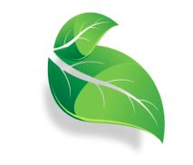

My Work

Alterhealth
UX/UI Design
About the project
For AlterHealth, I worked on a team of four to design a prototype for an office management system for an alternative health clinic that would meet the needs of all patients, doctors and receptionists. These needs included a way to manage precriptions, set and manage appointments, and to better connect doctor to patient. Below are some screenshots of the finished prototype.
Patient portal screen features:
- location of appointment
- information about doctor
- prescriptions to pick up
Receptionist portal screen features:
- number of appointment requests
- number of missed calls
- messages from message center
Doctor portal screen features:
- number of refill requests
- upcoming appointments
- patient information
Screen within receptionist's portal illustrating the schedule feature. This feature allows the receptionists to keep up with all scheduling and appointments.

leef
UX/UI Design
About the project
Leef was an idea I had a week to come up with and pitch to my classmates. The goal was for my app idea to be chosen by my peers, so that it can be furthered and made into a complete prototype. These are the mockups I made using Figma prototyping software, to show how leef is used as a social media platform and to show the general aesthetics that I wanted the app to have.
Goals for the login screen:
- easy to understand
- simple
- cohesive
Goals for the home screen:
- a way to see posts
- ability to make comments
- cohesion